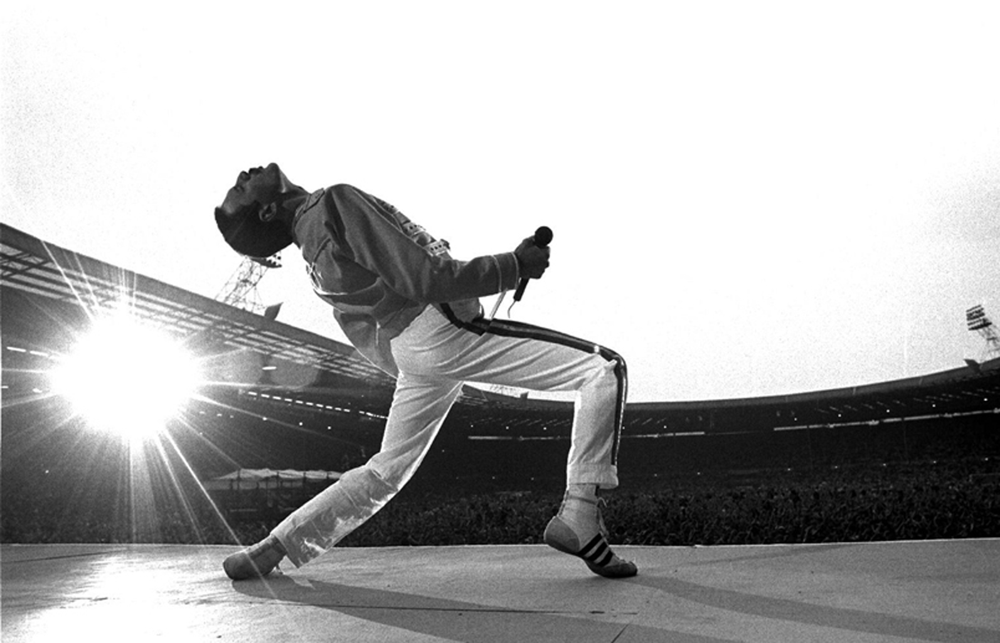

Freddie Mercury
British singer, pianist and composer who became world famous as founder and lead singer of British rock band Queen.

Freddie Mercury doing his extremely characteristic performance during the show.
Here's a time line of Freddie Mercury life:
- 1946 - Freddie Mercury was born in Zanzibar, Tanzania on September 5, 1946.
- 1954 - At the Age of eight, Freddie began his education at St. Peters English boarding school. (near Bombay, India)
- 1964 - Freddie Mercury moved to Middlesex, England in 1964, at the age of 17.
- 1967 - In 1967, Freddie Mercury joined a band called Smile.
- 1970 - In 1970, Freddie Mercury took over as the lead singer of Smile, and renamed the band Queen.
- 1975 - The album "A Night At The Opera" was released in 1975.
- 1975 - The Song Bohemian Rhapsody was released on the album entitled "A Night At The Opera".
- 1975 - Freddie Mercury toured Japan with Queen.
- 1977 - The song "We Will Rock You" was released on the album entitled "News of the World".
- 1978 - The song Bicycle Race was released in 1978 on the album Jazz.
- 1980 - The song "Another One Bites the Dust" was released on the album entitled "The Game".
- 1980 - The album "The Game" was released.
- 1984 - Queen decided to take a break. During that break, Freddie Mercury decided to release a solo album called Love Kills.
- 1988 - The Open Air festival in Barcelona, on October 8th, was Freddie Mercury's last performance.
- 1991 - The album Innuendo was released.
- 1991 - The day before he died, Freddie Mercury announced that he had AIDS on November 23, 1991.
- 1991 - He died at the age of 45, of bronchial pneumonia on November 24, 1991.
"I will not be a rock star, I'll be a legend!"
- Freddie Mercury, Queen.
- Freddie Mercury, Queen.
If you have time, you should read more about this LEGEND being on his Wikipedia entry.